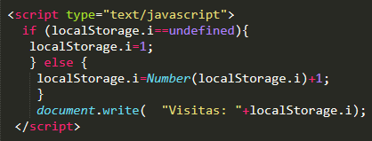

inicio
Sombras
formulario
visitas a mi pagina
audio
video
favicon
columnas de texto
contenido editable
animacion
Visitas
mediante este fragmento de codigo podemos implementar a nuestra pagina web un contador de visitas a nuestra pagina, y al recargar la pagina el contador ira aumentando el numero de visitas.
